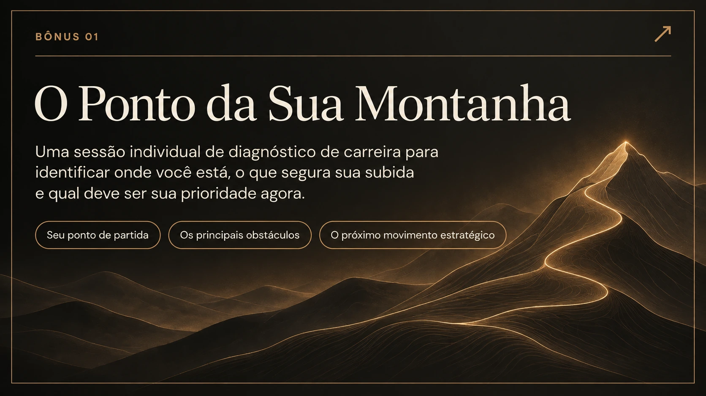
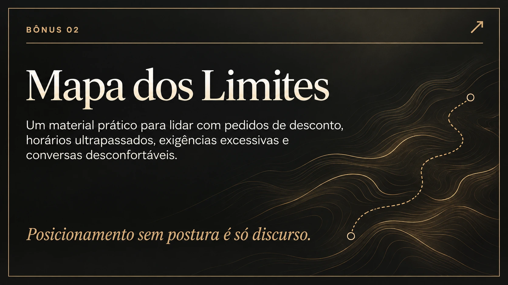
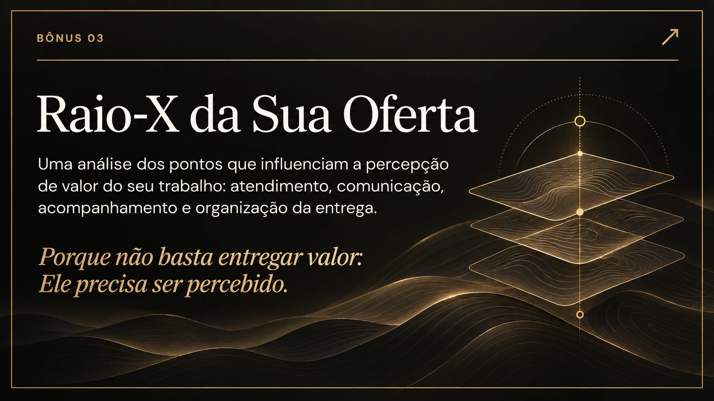
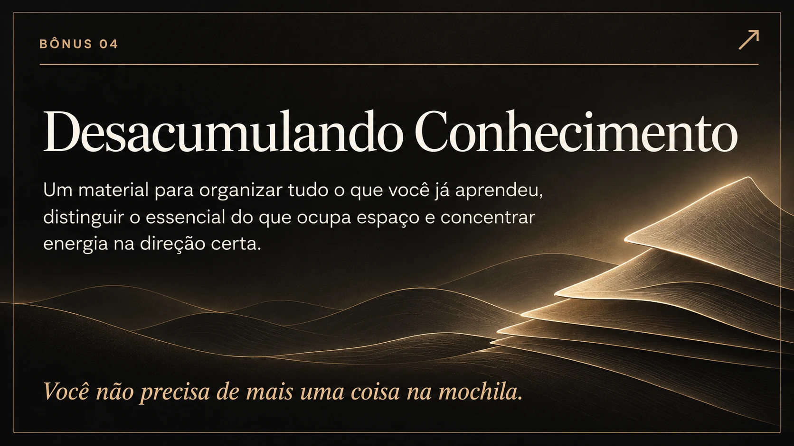

Consciência e princípios
Entenda o ponto de partida e os princípios que sustentam o seu próximo movimento.
UMA NOVA SUBIDA COMEÇA AQUI
Uma jornada para fisioterapeutas experientes que se sentem travadas profissionalmente e querem transformar anos de experiência em direção, posicionamento, autoridade, reconhecimento e crescimento.
Quero subir a minha montanha8 etapas · 4 bônus estratégicos · experiência predominantemente ao vivo
TALVEZ VOCÊ SE RECONHEÇA AQUI
Você já estudou, fez cursos, se especializou e atendeu inúmeros pacientes. Mas existe uma parte sua que olha para a carreira e pensa: “Eu deveria estar mais longe.”
Talvez você...
O QUE MUDA O CAMINHO
Outra pós, outro curso ou outra técnica podem ampliar a mochila. Mas é a clareza sobre onde você quer chegar que transforma o que já sabe em movimento.
APRESENTANDO O MÉTODO MONTANHA
Você não precisa começar sua carreira novamente. O Método Montanha conecta princípios, direção, posicionamento, postura, estrutura, autoridade, reconhecimento e crescimento.
Entenda o ponto de partida e os princípios que sustentam o seu próximo movimento.
Mapeie o que tem impedido sua subida e o que precisa deixar para trás.
Defina a direção, a especialização e a forma como quer ser reconhecida.
Transforme posicionamento em decisões práticas na relação profissional.
Organize a entrega do seu trabalho com mais intenção e consistência.
Trabalhe a percepção de valor da sua experiência e da sua oferta.
Reconheça o próximo nível profissional que faz sentido para você.
Construa uma visão de crescimento que possa continuar além da jornada.
A PRIMEIRA TURMA
Na primeira turma do Método Montanha, você passará por uma jornada predominantemente ao vivo, com interação, aplicação e condução.
Em vez de apenas consumir conteúdo, você terá espaço para olhar para sua carreira, identificar prioridades e decidir o próximo movimento estratégico.
Quero fazer parteALÉM DA JORNADA PRINCIPAL
Cada material aprofunda um ponto essencial da sua subida profissional.

Uma sessão individual de diagnóstico de carreira para identificar onde você está, o que segura sua subida e qual deve ser sua prioridade agora.

Um material prático para lidar com pedidos de desconto, horários ultrapassados, exigências excessivas e conversas desconfortáveis.
Posicionamento sem postura é só discurso.

Uma análise dos pontos que influenciam a percepção de valor do seu trabalho: atendimento, comunicação, acompanhamento e organização da entrega.
Porque não basta entregar valor. Ele precisa ser percebido.

Um material para organizar tudo o que você já aprendeu, distinguir o essencial do que ocupa espaço e concentrar energia na direção certa.
Você não precisa de mais uma coisa na mochila.
QUEM CONDUZ SUA JORNADA
Fisioterapeuta, especialista em Osteopatia e formada há 15 anos. Foi professora de Osteopatia na Faculdade Celso Lisboa e, em 2025, ministrou um seminário na Suíça.
A partir da própria trajetória, Mônica desenvolveu um trabalho voltado para fisioterapeutas experientes que desejam transformar conhecimento em posicionamento, autoridade e reconhecimento profissional.
O INVESTIMENTO NA SUA PRÓXIMA SUBIDA
Você já investiu anos em faculdade, cursos, especializações, congressos, livros, estudo e atendimento. E pode continuar investindo sem saber como transformar tudo isso em direção.
Você não está pagando R$ 5.000 para assistir aulas. O Método Montanha foi criado para ajudar você a entender o que fazer com tudo aquilo que já construiu.
PRIMEIRA TURMA · MÉTODO MONTANHA
TEMPO PARA DECIDIR
A primeira turma terá uma garantia de 30 dias para decisão. Você entra, conhece o método, vivencia a experiência e avalia se essa jornada faz sentido para o momento da sua carreira.
As condições completas serão definidas nos termos da oferta.O PRÓXIMO MOVIMENTO É SEU
O Método Montanha não foi criado para colocar mais conteúdo na sua cabeça. Ele existe para ajudar você a usar, com direção, tudo o que já construiu.
Quero subir a minha montanhaA montanha começa dentro. A transformação aparece fora.
PERGUNTAS FREQUENTES
Não. É uma jornada de desenvolvimento e crescimento profissional.
A prioridade são fisioterapeutas formadas há mais de 10 anos que sentem que deveriam estar profissionalmente mais longe.
Sim. A proposta é ajudar profissionais experientes a parar de acumular conhecimento sem direção e construir uma carreira com mais clareza.
A primeira turma será predominantemente ao vivo, com interação, aplicação e condução.
Uma sessão individual de diagnóstico de carreira para identificar seu momento atual, seus obstáculos e seu próximo movimento estratégico.
O investimento é de R$ 5.000 ou 12x de R$ 434,01. A oferta prevê 30 dias para decisão, com as condições completas definidas nos termos da oferta.